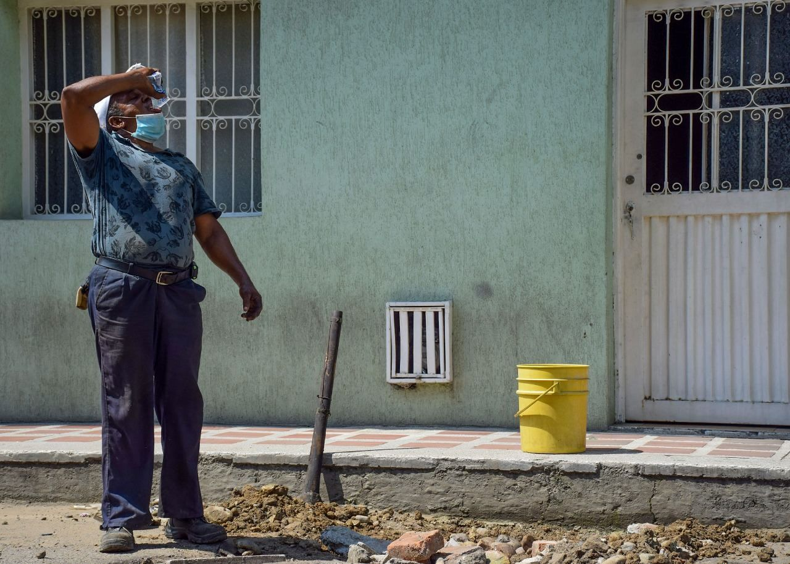

un hombre de 64 años de edad lleva más de 26 años tapando los huecos de la capital del departamento del Huila,
durante todo este tiempo se ha ganado el pan de cada día con esta bella labor, que como dice él al principio fue muy
agradecida, ahora, no tanto.
El hombre oriundo de Timba, Cauca llegó al departamento del Huila hace 54 años en búsqueda de un mejor futuro para él y su
familia, desafortunadamente no logró conseguir trabajo en ninguna parte y es por eso que se dedicó a tapar los huecos de Neiva.
“Yo me dedicaba a descargar camiones, ayudar a bajar bultos, fue un trabajo bastante duro, y de un momento para otro deje de
hacer eso, y estaba desesperado por conseguir trabajo, cuando un día yo vi como transitaban los vehículos, habían muchos huecos,
entonces me puse a echar tierrita y algunos escombros y la gente me aportaba su monedita, vi que la gente le agradecía a uno
por el trabajo que estaba realizando”, relató el tapa huecos más reconocido de la capital del Huila.
Demetrio es una persona humilde con un trabajo poco valorado, pero él es feliz, porque a diario salva vidas de muchas
personas con tan solo tapar un hueco, es un "hombre de Dios", como el mismo lo manifiesta, durante estos 26 años de trabajo
ha tapado más de 5 millones de huecos en la capital del departamento del Huila.
“Yo después me compré un pisón de esos de hierro, y le echaba tierrita y pisaba, y la gente lo apoyaba a uno, los taxistas
me pitaban para darme la moneda y para qué era muy buena la colaboración, por eso me dedique a seguir haciendo esta labor,
yo era feliz trabajándole a ellos porque yo veo que les hago un favor porque les evito los accidentes, les evito cualquier
cambio de repuesto porque cuando cogen un hueco algo se les puede dañar del vehículo y tiene que ir al taller a cambiarlo”,
sostuvo Sánchez.
Sin embargo, durante todos estos años que lleva Demetrio trabajando en esta labor los tiempos han cambiado y las personas
no le colaboran como antes, al contrario el hombre manifiesta que cuando anteriormente le pitaban para darle la moneda ahora
le pitan para que dé permiso y no ‘estorbe’.
“Primero me pitaban para darme monedas, y ahora me pitan para tratarme mal y para que me quite de ahí, que no haga trancón,
ni que haga estorbo, sin embargo, como yo sé que Dios me iluminó este trabajo, porque yo estaba sufriendo, estaba con hambre,
yo le reclamé al señor porque yo estaba aguantando hambre y la biblia dice que los hijos de Dios no aguantan hambre, entonces
fue ahí cuando él me mostró como estaban pasando los buses, como estaban las calles de Neiva llenas de huecos y fue así como
Dios me dio esta labor, me acuerdo mucho que el primer día me hice más de 15 mil pesos, que en ese entonces siempre era platica”,
dijo Demetrio.

EN MEDIO DE LA PANDEMIA
Uno de los tiempos más difíciles para el señor Demetrio fueron los meses en los que se vivieron en confinamiento a raíz de la pandemia del covid-19, pues lamentablemente como todos el no pudo salir a trabajar, siendo el único que lleva el sustento diario a su familia, la situación emporaba, no obstante pudo lograr recibir uno de los mercados que estaba dando el Gobierno Local, además de eso habían personas de buen corazón que le llevaban cualquier cosa para la comida.
“Estuve casi tres meses quieto sin poder hacer nada, me gasté todo lo poquito que tenía ahorrado en comidas, gracias a Dios también pude obtener un mercado y con esos nos bandeamos esos meses, por eso yo tengo mucho que agradecerle al señor porque nunca me faltó un plato de comida”.
Desafortunadamente cuando Demetrio pudo volver a salir a trabajar fue a buscar sus materiales e implementos y se los habían robado, situación aún más compleja para este hombre que le ha tocado una dura situación.Source Title
<